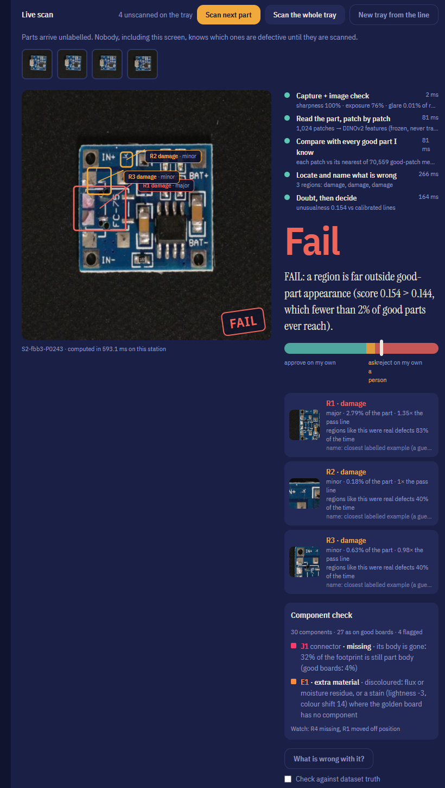
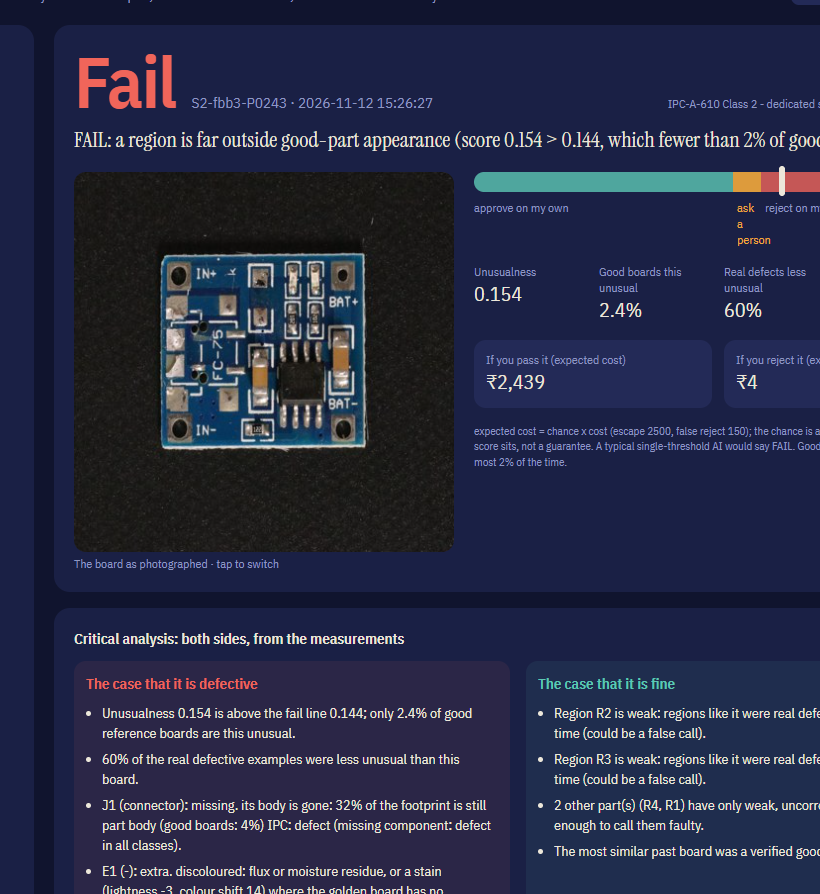
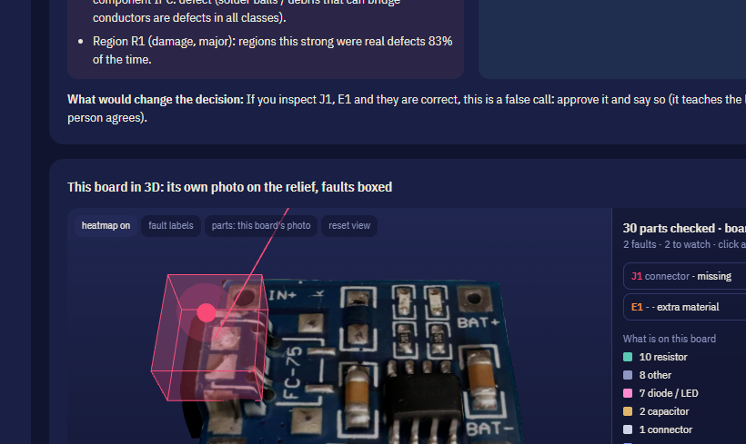
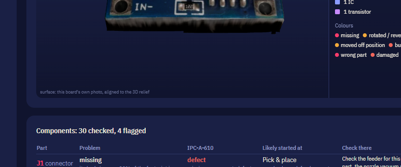
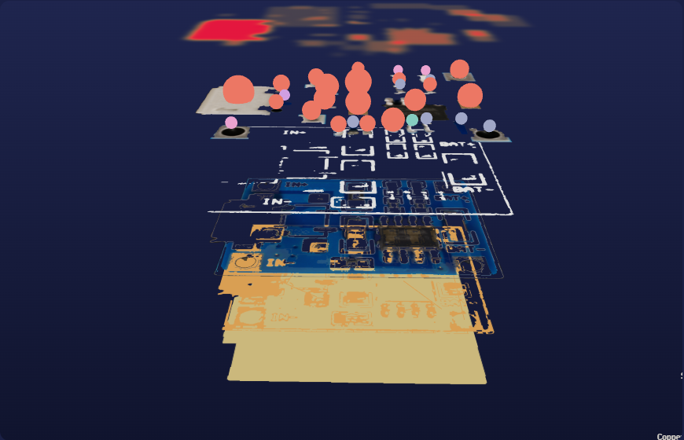
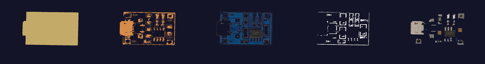
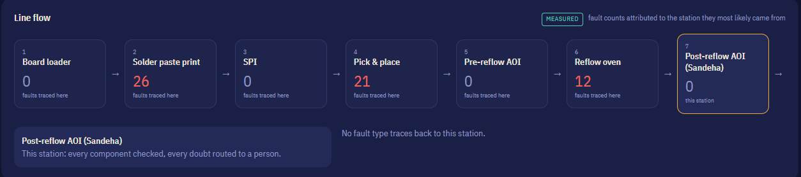

Sandeha (संदेह, సందేహ) means doubt. Every number in this book was measured by the team on public data (VisA, CC BY 4.0) — none recorded by us, none assumed.
An inspector is on her six-hundredth circuit board of the night. Thirty-five of the forty alarms so far were nothing. The forty-first board — the one with the burnt chip — she waves through. It ships.
| Requirement | Bar |
|---|---|
| Learn a new product | ≤ 30 good + ≤ 5 defect images |
| Calibrated uncertainty | judged on a risk–coverage curve |
| Human review load | ≤ 10% of parts |
| Domain shift | detect, adapt, no forgetting |
| Edge speed | ≥ 5 FPS |
| Demo | two lightings, abstain queue, live adaptation |
Sandeha learns a circuit board from 30 good photos — no labels, no CAD, no training run — finds every component on it, and gives every board one of three answers, with a statistical guarantee on how often a good board is wrongly rejected.
Fail line: a split-conformal bound on good boards — a good board crosses it at most 2% of the time (α = 0.02). Pass line: set from real and imagined defects so few slip under it. Between them, the board goes to a person. A review-budget autopilot keeps that band under 10% — and it may only raise the pass line, never loosen the fail line.
For every rejected board: which component (R4, U1, J1…), what happened (missing, moved, rotated, burnt, wrong part, solder, damaged, contamination), where on the line it likely started, and how to repair it — shown on that board's own photo in 3D.

| Stage | What it does |
|---|---|
| Image check | refuses blurred, dark or glare-washed images (→ HOLD, not a guess) |
| Understand | 1,024 DINOv2 patches; board outline aligned onto the photo |
| Compare | each patch vs its nearest of ~70,000 good-patch memories |
| Components | 30 parts each checked against their own normal range |
| Locate | regions cut from the heatmap, named, pinned in 3D |
| Doubt, decide | two calibrated lines → PASS / DOUBT / FAIL |
A component is called faulty only when two independent measurements agree — its own geometry/colour check and the patch-memory heatmap — or the evidence is overwhelming. Everything weaker is a quiet "watch" note.
| pcb4 · 60 defective + 30 good boards | Before | After |
|---|---|---|
| Fault flags on the true defect | 44% | 62% |
| Wrong fault flags per good board | 0.40 | 0.07 |
| Defective boards with a correct flag | 97% | 93% |





| Board | Marking read | Verdict |
|---|---|---|
| Golden (majority of 3 references) | TC4056A | — |
| Good boards (8 of 8) | TC4056A | match |
| Burnt boards (5 of 5) | "4056E SN2N1P" / unreadable | different |
TC4056A is the real Li-ion charger IC on this board. The local VLM reads text reliably (unlike judging defects), and the comparison is plain string similarity — so the verdict is measurable. Small sample; we say so.

| Measure | Whole photo | Board only (shipped) |
|---|---|---|
| AUROC | 0.986 | 0.995 |
| Good boards wrongly rejected | 2.5% | 0% |
| Defective boards passed | 0 of 80 | 1 of 80 |
| Boards sent to a person | 20.6% | 10.6% |
| Callouts landing off the board | 23.7% | 2.5% |
| Measure (VisA) | Result |
|---|---|
| Region callouts on the real defect (4 PCB-type products) | 75% |
| Defective parts with a callout on the true defect | 90% |
| Components mapped on pcb4, no labels | 30 |
| Component-type classifier, held-out photos | 86.7% |
| Real "missing" parts diagnosed (pcb4) | 87% |
| Defective boards localised, all 4 PCBs | 78% |
| Measure | Result |
|---|---|
| Shift (camera bumped / light change) detected | within 10–15 parts |
| Adaptation from 5 photos | AUROC 0.70 → 0.92 |
| Forgetting after adaptation | none (probe set unchanged) |
| Scan latency on the station | ~0.4–0.7 s per board |
| Review-budget autopilot (pcb4) | review ~40% → 11% |
The type classifier was first scored at 95%; we found 12 of its 120 held-out photos duplicated in training, removed them, and report the honest 86.7%.
| Capability | Rule-based AOI | Typical anomaly AI | Cloud vision model | Sandeha |
|---|---|---|---|---|
| Data to start | CAD + programming per board | hundreds of images | none, but no calibration | 30 good photos, no labels |
| Says "I don't know" | no | no (one threshold) | no | yes — calibrated doubt band |
| Guarantee on false rejects | no | no | no | yes — conformal, α = 2% |
| Explains which part, why | per programmed rule | a heatmap | free text, unverified | component · fault · cause · repair · IPC grade |
| Notices changed conditions | no | no | no | conformal martingale alarm |
| Adapts without forgetting | re-program | retrain | n/a | 5 photos, memory only grows |
| Learns from people safely | no | often blindly | no | two-person rule + reviewer checks |
| Wrong / burnt chip | if programmed | sometimes | sometimes | marking read and compared |
| Data leaves the plant | no | depends | yes | never — all models local |
| Runs on edge | dedicated machine | usually GPU | no | 21 FPS on laptop CPU |
At the same false-reject rate, a single-threshold model let 39.1% of defects escape across 12 products. Sandeha let 14.6% escape — because instead of guessing on hard cases, it asks a person about ~10% of parts.
Public data (VisA, CC BY 4.0), held-out test sets, three seeds, leakage removed when found, and every limitation printed on screen next to the feature it limits. Nothing in this book is a projection.
It's 2 a.m. on an electronics line. An inspector is looking at her six-hundredth circuit board of the night. The inspection machine beside her has raised an alarm forty times this shift. Thirty-five of them were nothing.
So when the forty-first alarm goes off, she does what any tired human would do. She waves it through. That board had a burnt chip. It shipped. [pause]
This isn't a failure of people. It's a failure of machines that never admit when they are unsure.
Our problem statement asks for something hard and honest: learn a new product from thirty good photos and five defects; know when you are unsure; send no more than ten percent of parts to a person; survive a change in lighting; run on the edge.
Today's options fail this in two ways. Classic inspection machines must be programmed board by board — and their own vendors report that fifteen to thirty percent of their alarms are false. Typical AI models give you one number and one threshold. Above it, reject. Below it, pass. They never say "I don't know." So they either scrap good boards, or ship bad ones.
We built Sandeha. In Sanskrit, sandeha means doubt. Doubt is the feature.
We show it thirty good boards. No labels, no CAD files, no training run. In about a minute it finds every component on the board — the USB connector, the IC, the resistors, the capacitors — and learns how each one normally looks.
Now boards arrive unlabelled. Not even this screen knows which are bad. Every board gets one of three answers: pass on its own, reject on its own — or the one nobody else gives you: "I'm unsure — a person decides."
And when it rejects, it doesn't just say "defect". It says which part, what happened, where on the line it likely started, and how to repair it — on this board's own photo, in 3D.
Across twelve products in a public industrial dataset, at the same false-reject rate as a single threshold, a typical AI let thirty-nine percent of defects escape. Sandeha: fourteen point six — while asking a person about only ten percent of parts.
On the charger board you just saw, scored on a hundred and sixty boards it had never seen: zero good boards wrongly rejected. One defect in eighty got through. About one board in ten sent to a person.
[Approval desk] When it asks, it doesn't just hand over a problem. The inspector gets a full dossier: the case that the board is defective, the case that it's fine, the cost of each choice, and the industry acceptance grade for every fault.
[Board X-ray] It pulls the board apart into its real layers — copper, solder mask, print, parts — and shows where failures have concentrated over the whole shift. And it reads the part number printed on each chip: on every good board it read TC4056A; every burnt board we checked read differently.
If the camera is bumped or the lights change, it notices within ten to fifteen boards, stops approving on its own, adapts from five good photos, and forgets nothing it knew. It runs at twenty-one frames per second on a laptop CPU. Every AI model runs on the station. No cloud. Nothing leaves the plant.
We'll tell you what it can't do, because that's the whole idea. It cannot see a dry solder joint from one camera above the board — real machines use angled coloured lights for that, and so would we. Its part-level checks are strongest on the board you saw, and weaker on denser boards. Its AI advisor is a second pair of eyes, never the judge. We measured all of this ourselves, and we show it on screen.
Remember the inspector at 2 a.m.? She doesn't need a machine that's always confident. She needs one that's right when it's sure, and honest when it isn't — so that when it raises a hand, she believes it.
That's Sandeha. The inspector that knows when it doesn't know. Thank you.
| Time | Screen | Do / say |
|---|---|---|
| 1:20 | Choose a board | pcb4 (Li-ion charger) — already learned |
| 1:30 | Scan boards | "Scan the whole tray": unlabelled boards, stages with real timings |
| 1:50 | A FAIL | point at the component check and the 3D box on its own photo |
| 2:30 | Approve | open the dossier: case for / against, cost, IPC grade, root cause |
| 3:00 | Board X-ray | "Explode", click the most-failed part, read a chip |
| 3:20 | Demo mode | scenario 4 (camera bumped) if time: the alarm and adaptation |
Isn't 30 photos too few?
For a nearest-neighbour patch memory, no: it compares every patch to what good looks like. The guarantee is on the good side (≤2% false rejects); escapes are measured, not promised.
What if the lighting changes?
A conformal martingale detects it within 10–15 boards; auto-pass is suspended; 5 photos adapt it; a fixed probe set proves nothing was forgotten.
Why trust the AI explanations?
The verdict comes from calibrated measurements. Explanations are composed from those measurements and cited; the VLM only describes and reads text.
How is this different from AOI?
No board programming, a calibrated "I'm unsure", per-component normal ranges learned from data, and every limit shown.
Is the data real?
Yes — VisA (Amazon, CC BY 4.0): real boards, real defects with pixel masks. Component photos MIT; 3D models KiCad; lighting CC0.
What does it cost to run?
A laptop-class CPU reaches 21 FPS at 224 px; the GPU is only needed for the larger optional models.
scripts/p1_eval.py · region_eval.py · board_eval.py · flag_precision.py · board_only_eval.py · train_components.py · export_onnx.py
Results land in data/results/. Tests: 25 backend tests (pytest).